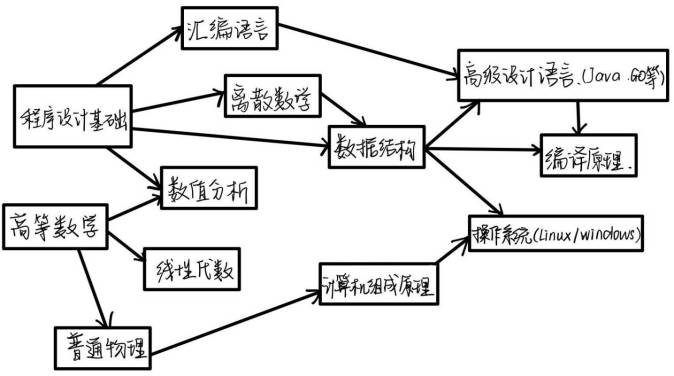

计算机学科各课程之间关系
★对计算机专业的认识 : 计算机专业是一门研究信息是如何表示和存储、如何发送和接收、如何处理分析的一门学科。
信息的概念很广，它可以包含我们人类能感知的信号（比如图像、声音、文字）和人类不能感知的信号（无线信号）。
计算机还研究什么问题是可以计算的，什么问题是不可以计算的，什么问题是可以有效解决的，什么问题是目前无法解决的。
计算机专业在高速发展中有着不可替代的地位，当代学生都应学习基本的计算机操作技术。
同时计算机科学是富有生命力的，它在发展中不断更新与进步，充满开放性与创新性
✦学业规划：在大一的学习过程中了解各个专业的相关知识与情况，选择最感兴趣且适合自己的专业，完成英语四六级的考试。
分流后认真学习自己的专业课程，打下坚实的基础，积极参加比赛或者科研积累经验。
在学习生活中养成阅读的好习惯，做到每日阅读30分钟到一小时，同时培养自己的兴趣爱好，做到全面发展。